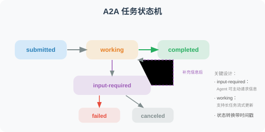

A2A（Agent-to-Agent）协议
A2A（Agent-to-Agent）是 Google 于 2025 年 4 月在 Google Cloud Next 大会上推出的开放协议，专门设计用于不同 Agent 之间的互操作性。该协议发布时即获得超过 50 家技术合作伙伴的支持。
A2A 的设计目标
A2A 解决的问题：
- 不同公司/团队开发的 Agent 如何互相调用？
- 如何标准化 Agent 能力的声明和发现？
- 跨框架的 Agent 如何安全地传递任务？
类比：
A2A 对 Agent = HTTP 对 Web 服务
让 Agent 成为可以相互连接的"微服务"
MCP vs A2A：互补而非竞争
MCP 和 A2A 解决的是不同层面的问题：
MCP（模型-工具层）：
Agent ←→ 工具/数据
"让 Agent 能使用各种工具"
类比：人学会使用锤子、扳手
A2A（Agent-Agent 层）：
Agent ←→ Agent
"让 Agent 能与其他 Agent 协作"
类比：人与人之间的沟通协作
两者结合 = 完整的 Agent 互操作体系
Agent 能力卡（Agent Card）
每个 A2A 兼容的 Agent 都需要在 /.well-known/agent.json 发布一个能力卡：
import json
from typing import Optional
class AgentCard:
"""A2A Agent 能力声明"""
def __init__(
self,
name: str,
description: str,
url: str,
version: str = "1.0.0"
):
self.card = {
"name": name,
"description": description,
"url": url,
"version": version,
"capabilities": {
"streaming": True,
"pushNotifications": False,
"stateTransitionHistory": True, # 支持状态追踪
},
"defaultInputModes": ["text"],
"defaultOutputModes": ["text"],
"skills": []
}
def add_skill(
self,
id: str,
name: str,
description: str,
input_modes: list[str] = None,
output_modes: list[str] = None
):
"""添加技能描述"""
self.card["skills"].append({
"id": id,
"name": name,
"description": description,
"inputModes": input_modes or ["text"],
"outputModes": output_modes or ["text"],
})
def to_json(self) -> str:
return json.dumps(self.card, ensure_ascii=False, indent=2)
# 创建示例 Agent Card
card = AgentCard(
name="数据分析 Agent",
description="专业的数据分析 Agent，可以处理 CSV 数据并生成可视化报告",
url="https://my-agent.example.com",
version="2.1.0"
)
card.add_skill(
id="analyze_csv",
name="CSV 数据分析",
description="分析 CSV 文件中的数据，计算统计指标",
input_modes=["text", "file"],
output_modes=["text", "data"]
)
card.add_skill(
id="generate_chart",
name="数据可视化",
description="生成数据图表（折线图、柱状图、饼图）",
input_modes=["data"],
output_modes=["image", "text"]
)
print(card.to_json())
A2A 任务传递
A2A 定义了完整的任务生命周期管理，包括任务的创建、执行、状态追踪和结果返回：
from fastapi import FastAPI
from pydantic import BaseModel
import uuid
import datetime
app = FastAPI(title="A2A Agent Server")
# ============================
# A2A 消息格式
# ============================
class A2AMessage(BaseModel):
"""A2A 标准消息格式"""
role: str # "user" | "agent"
parts: list[dict] # 消息内容块（支持 text、file、data 等类型）
class A2ATask(BaseModel):
"""A2A 任务请求"""
id: Optional[str] = None
message: A2AMessage
class A2ATaskResult(BaseModel):
"""A2A 任务结果"""
id: str
status: dict # state: "completed" | "failed" | "working" | "input-required"
artifacts: list[dict] = []
# ============================
# A2A Server 端点
# ============================
@app.get("/.well-known/agent.json")
async def get_agent_card():
"""Agent 能力声明（所有 A2A Agent 必须实现）"""
return card.card
@app.post("/tasks/send")
async def send_task(task: A2ATask) -> A2ATaskResult:
"""接收并处理任务（同步模式）"""
task_id = task.id or str(uuid.uuid4())
# 提取用户消息
user_message = ""
for part in task.message.parts:
if part.get("type") == "text":
user_message += part.get("text", "")
# 处理任务（调用真实的 Agent 逻辑）
from openai import OpenAI
client = OpenAI()
response = client.chat.completions.create(
model="gpt-4o-mini",
messages=[{"role": "user", "content": user_message}]
)
result = response.choices[0].message.content
return A2ATaskResult(
id=task_id,
status={
"state": "completed",
"timestamp": datetime.datetime.now().isoformat()
},
artifacts=[{
"parts": [{"type": "text", "text": result}],
"name": "response"
}]
)
@app.post("/tasks/sendSubscribe")
async def send_task_streaming(task: A2ATask):
"""接收并处理任务（流式模式，通过 SSE 返回中间状态）"""
# 支持长时间运行的任务，通过 SSE 推送状态更新
pass
# ============================
# A2A 客户端（调用其他 Agent）
# ============================
import requests
class A2AClient:
"""A2A 客户端：调用其他 Agent"""
def __init__(self, agent_url: str):
self.agent_url = agent_url.rstrip("/")
self.agent_card = None
def discover(self) -> dict:
"""发现 Agent 能力"""
response = requests.get(
f"{self.agent_url}/.well-known/agent.json"
)
self.agent_card = response.json()
return self.agent_card
def send_task(self, message: str) -> str:
"""发送任务给 Agent"""
payload = {
"message": {
"role": "user",
"parts": [{"type": "text", "text": message}]
}
}
response = requests.post(
f"{self.agent_url}/tasks/send",
json=payload
)
result = response.json()
# 提取结果
for artifact in result.get("artifacts", []):
for part in artifact.get("parts", []):
if part.get("type") == "text":
return part["text"]
return "Agent 返回结果为空"
# 使用示例
client = A2AClient("https://my-data-agent.example.com")
card = client.discover()
print(f"发现 Agent：{card['name']}")
print(f"可用技能：{[s['name'] for s in card.get('skills', [])]}")
result = client.send_task("分析这组销售数据并给出趋势分析：[100, 120, 95, 140, 160]")
print(result)
A2A 任务状态机
A2A 定义了清晰的任务状态流转：

流式模式：/tasks/sendSubscribe
对于长时间运行的任务（如数据分析、文档生成），A2A 提供基于 SSE（Server-Sent Events） 的流式模式，让客户端实时接收任务进度更新：
from fastapi import FastAPI
from fastapi.responses import StreamingResponse
import json
import asyncio
app = FastAPI()
async def task_stream(task_id: str, user_message: str):
"""通过 SSE 流式返回任务进度和结果"""
# 1. 发送任务状态变更：working
yield f"data: {json.dumps({'id': task_id, 'status': {'state': 'working', 'message': '正在分析数据...'}})}\n\n"
await asyncio.sleep(1) # 模拟处理
# 2. 发送中间结果（artifact 更新）
yield f"data: {json.dumps({'id': task_id, 'artifact': {'parts': [{'type': 'text', 'text': '已完成第一阶段：数据清洗'}], 'name': 'progress', 'append': True}})}\n\n"
await asyncio.sleep(1)
# 3. 发送最终结果
yield f"data: {json.dumps({'id': task_id, 'status': {'state': 'completed'}, 'artifact': {'parts': [{'type': 'text', 'text': '分析完成：销售额增长 23%'}], 'name': 'result', 'lastChunk': True}})}\n\n"
@app.post("/tasks/sendSubscribe")
async def send_task_streaming(task: dict):
"""A2A 流式任务端点"""
task_id = task.get("id", str(uuid.uuid4()))
user_message = task["message"]["parts"][0].get("text", "")
return StreamingResponse(
task_stream(task_id, user_message),
media_type="text/event-stream",
headers={
"Cache-Control": "no-cache",
"Connection": "keep-alive",
}
)
客户端消费 SSE 流：
import httpx
async def subscribe_task(agent_url: str, message: str):
"""订阅流式任务结果"""
payload = {
"message": {
"role": "user",
"parts": [{"type": "text", "text": message}]
}
}
async with httpx.AsyncClient() as client:
async with client.stream(
"POST", f"{agent_url}/tasks/sendSubscribe", json=payload
) as response:
async for line in response.aiter_lines():
if line.startswith("data: "):
event = json.loads(line[6:])
status = event.get("status", {})
print(f"状态: {status.get('state', 'unknown')}")
if artifact := event.get("artifact"):
for part in artifact.get("parts", []):
if part.get("type") == "text":
print(f" → {part['text']}")
Push Notifications（推送通知）
对于需要更长时间处理的任务，A2A 支持通过 Push Notifications 机制异步通知客户端，避免客户端长时间保持 SSE 连接：
class AgentCardWithPush:
"""支持推送通知的 Agent Card"""
def __init__(self, name: str, url: str):
self.card = {
"name": name,
"url": url,
"capabilities": {
"streaming": True,
"pushNotifications": True, # 声明支持推送
"stateTransitionHistory": True,
},
"skills": []
}
# Push Notification 工作流程：
# 1. 客户端调用 /tasks/send 提交任务
# 2. 客户端调用 /tasks/{id}/pushNotification/set 注册回调 URL
# 3. Agent 处理完成后向回调 URL 发送通知
# 4. 客户端调用 /tasks/{id} 获取完整结果
@app.post("/tasks/{task_id}/pushNotification/set")
async def set_push_notification(task_id: str, config: dict):
"""注册推送通知回调"""
callback_url = config.get("url")
# 存储回调 URL，任务完成后向此 URL 发送 POST 请求
push_registry[task_id] = callback_url
return {"status": "registered"}
认证与安全
A2A 协议通过 Agent Card 的 authentication 字段声明认证要求，支持多种认证方案：
# Agent Card 中的认证声明
agent_card_with_auth = {
"name": "企业数据分析 Agent",
"url": "https://data-agent.corp.example.com",
"version": "2.0.0",
"authentication": {
"schemes": [
{
"scheme": "Bearer",
"description": "使用 OAuth 2.0 Bearer Token 认证",
"tokenUrl": "https://auth.corp.example.com/oauth/token",
"scopes": ["agent:read", "agent:execute"]
},
{
"scheme": "ApiKey",
"description": "使用 API Key 认证",
"in": "header",
"name": "X-API-Key"
}
]
},
"capabilities": {
"streaming": True,
"pushNotifications": True,
"stateTransitionHistory": True,
},
"skills": [...]
}
# 客户端带认证调用
class A2ASecureClient:
"""带认证的 A2A 客户端"""
def __init__(self, agent_url: str, auth_token: str):
self.agent_url = agent_url
self.headers = {
"Authorization": f"Bearer {auth_token}",
"Content-Type": "application/json"
}
def send_task(self, message: str) -> dict:
response = requests.post(
f"{self.agent_url}/tasks/send",
json={
"message": {
"role": "user",
"parts": [{"type": "text", "text": message}]
}
},
headers=self.headers
)
response.raise_for_status()
return response.json()
小结
A2A 协议的价值：
- 互操作性：不同框架、不同团队的 Agent 可以相互调用
- 服务发现：通过 Agent Card（
/.well-known/agent.json）声明能力 - 标准消息格式：统一的请求/响应格式，支持多模态
- 任务状态管理：完整的任务生命周期追踪
- 与 MCP 互补：MCP 管理 Agent-工具连接，A2A 管理 Agent-Agent 连接
- 行业支持：Google、Salesforce、SAP 等 50+ 企业参与